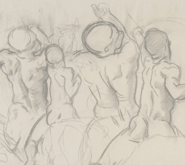

THOMAS MCKELLER AND
FEBRUARY 13 - OCTOBER 12, 2020
NOW EXTENDED
BOSTON'S APOLLO
THOMAS MCKELLER AND
JOHN SINGER SARGENT
FEBRUARY 13 - OCTOBER 12, 2020
HOSTETTER GALLERY
In 1916, John Singer Sargent (1856–1925) met Thomas Eugene McKeller (1890–1962), a young Black elevator attendant, at Boston’s Hotel Vendome. McKeller posed for most of the figures—both male and female—in Sargent’s murals in the Museum of Fine Arts. The painter transformed McKeller into white gods and goddesses, creating soaring allegories of the liberal arts that celebrated the recent expansion of the city’s premier civic museum.
Sargent then gave the preparatory drawings of McKeller to Isabella Stewart Gardner, ensuring their preservation in perpetuity. Displayed together for the first time, the drawings provide a window into the metamorphoses of race, gender, and identity, and attest to a relationship between two men, artist and model, at a time of intense social upheaval. This exhibition brings together Sargent’s drawings and related historical materials to tell the story of McKeller’s life. His central importance in Sargent’s major artistic commissions in the Boston area considers critical questions of race, class, and sexuality—as relevant today as they were in Gilded Age Boston.
COMMUNITY COLLABORATORS
An inclusive interpretation strategy and several community roundtable discussions for this exhibition have yielded multiple perspectives from local artists, scholars, community thought leaders, and Thomas McKeller’s descendants, whose responses form a powerful presence through wall texts, audio, an in-gallery video, and a rich program of public talks and performances. We invite you to experience this multifaceted exhibition that brings together our own voices with those of the past.